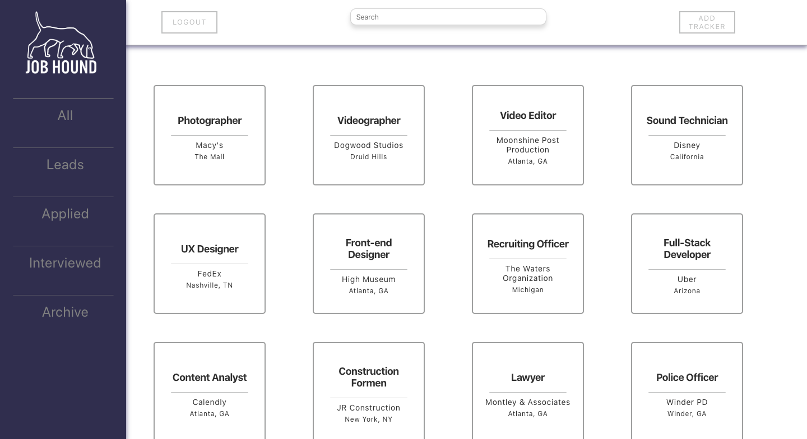
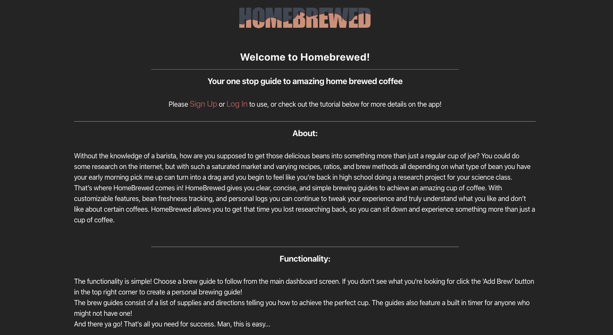
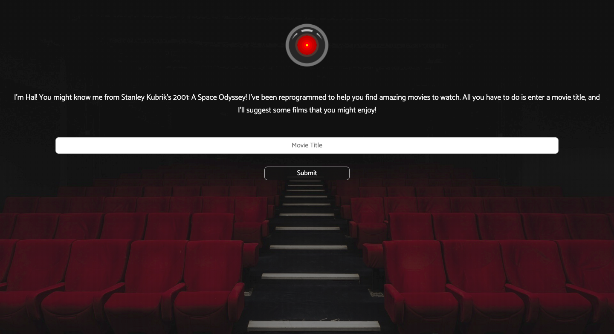
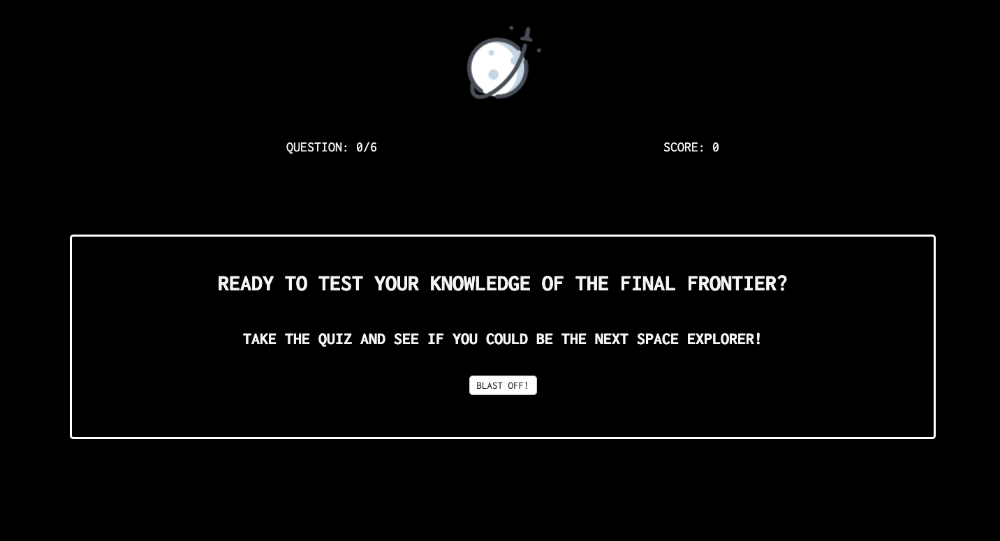

Job Hound

Job Hound is a react application built to keep track of your job applications. Built with a full backend in Node and Postgres Job Hound makes organization fast, easy and attainable!
HomeBrewed

Coffee has always been something I found happiness in. Especially good coffee. I knew that when I first began making coffee at home there was just too much information out there on how to brew. Homebrewed aims to to fix that by giving simplistic and easy to follow direction. This react/node application allows users to create personal brews with dynamic forms, integrated timers, and a full database.
Movie Generator

In college I majored in Film and Digital Media. I always wished I could find an easy to use application that found suggestions based on a movie title, so I created one. This application uses two different APIs to grab cultural data and create a curated list of movie suggestions based on the user input.
Quiz App

Inspired by my love for all things outer space, this simple quiz tests the user on their knowledge of the final frontier. See if you have what it takes!
Trey Tiller
I'm a recent graduate of the Fullstack bootcamp from Thinkful. I also have a Bachelor's in Film and Digital Media, specialized in video post-production. My creativity and analytical background keep me drawn to Software Development. I love debugging and problem solving and chase the overwhelming relief you get when that problem code begins to just work. I geek out over organized, simple, and truly semantic projects, and love the feeling of creating something bigger than myself.
When I'm not practicing my JavaScript or studying the latest language update I like to spend my time traveling and practicing photography and videography. When I'm not traveling you can catch me spending time with my amazing pupper, gaming and enjoying a really good cup of coffee.